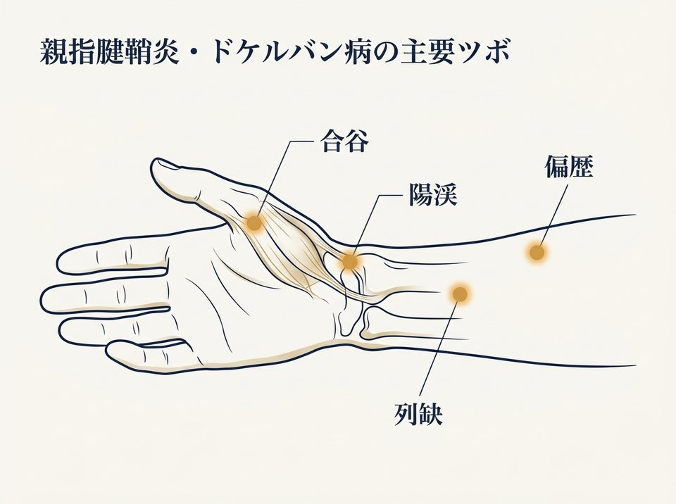

外反母趾の鍼灸
足の親指が「くの字」に変形し付け根が痛む状態。アーチ崩れや姿勢の偏りを見極め、鍼灸と足指ケアで負担を和らげます。


院長YouTube解説・関連動画
外反母趾は足の親指が小指側に変形し、くの字になる状態
外反母趾は、足の親指が小指側に変形し、くの字になる状態のことです。外反母趾の主な原因は、合わない靴です。特に、女性がハイヒールが原因で外反母趾を起こすことが多いです。
他にも、外反母趾は関節リウマチの合併症としても起きることがあります。症状が進むと、普通の靴を履いていても違和感を感じるようになります。ハイヒールなどではなくても普通の靴で歩くだけでも痛みが起きるようになるのです。
外反母趾の始まりは、第１中足骨が内側に広がることだとも言われています。外反母趾では、親指が曲がって変形することに合わせて、第１中足骨が内側に広がります。
中足骨が内側に広がると、親指は靴の先によって外側に押されて曲がります。すると母趾内転筋に引っ張られ、付け根でねじれ、曲がって変形することにつながるのです。
歩くたびに親指の付け根が痛い、靴を選ぶ時合うものが少なくて困るという人は多いと思います。
外反母趾は親指が外側に曲がってしまって付け根の骨が飛び出してしまう状態のことで、最初は違和感だけでも放っておくと痛みや炎症が悪化し日常生活に支障をきたすこともあります。
外反母趾の１番大きな原因は靴を履くこと
外反母趾の１番大きな原因は靴を履くことです。幅が狭く、つま先が細くなり尖った靴を履くと親指のつけ根から先が圧迫されるため、変形してしまうのです。
さらに、ヒールの高い靴の場合はつけ根にかかる力が増えます。そのため、より変形が強くなってしまいます。
十代で起こる外反母趾は、親指が人差し指より長かったり、生まれつき扁平足ぎみであったりという外反母趾になりやすい特徴から起こることが多いです。
外反母趾を起こす年代は中年期が１番多いです。中年期の場合は履く靴が原因であることはもちろん、肥満と筋力の低下なども外反母趾を引き起こしやすい要因になります。
多くの外反母趾は、足の縦横のアーチがつぶれてしまい横幅が広い状態の開帳足にもなっていることも原因となっています。
・靴の影響
つま先が細い靴を長時間履くと、親指が小指側に押され、変形を引き起こします。また、大きすぎる靴や小さすぎる靴を履くことで、足の形に不自然な力がかかります。
・足の形や構造の問題
土踏まずがなく足のアーチが崩れている扁平足の場合、歩行時に親指の付け根に過度な負担がかかります。また横アーチが崩れて平らな開張足になると、親指の付け根に圧力がかかりやすくなります。
・遺伝的要因
家族に外反母趾の人がいる場合、足の形やアーチ構造が似ているため、発症リスクが高まります。
・歩行や姿勢の問題
歩行時に親指の付け根に過剰な負荷がかかる歩き方をしていると、外反母趾のリスクが高まります。さらに猫背や反り腰などの姿勢の悪さによって、足にかかる負荷のバランスが崩れます。
・生活習慣の影響
立ち仕事などで長時間の立ちっぱなしは足の負担が増えます。足の筋力不足は足のアーチを支える力が弱くなります。
その他にも、関節の病気や加齢が原因になることもあります。
外反母趾を理解するためには足の構造を理解することが大事です。
足は26個の骨で構成されていて各骨が靭帯と筋肉によって支えられています。親指の骨には第一中足骨、基節骨があり、関節部分には中足趾節関節（M T P関節）があります。手も一緒で中足骨、基節骨に分かれています。
外反母趾はこのM T P関節が変形し親指が外側に曲がることで起こります。中足骨が内向き、基節骨が外側に変形します。
この変形によって親指の付け根が外に飛び出してしまい、バニオン（滑膜包炎）と言われる炎症が起こるのです。この骨の突出が靴に擦れることで炎症が起きて痛みを伴います。
M T P関節の周辺には靭帯や関節包といわれる線維組織がたくさんあります。ここで外反母趾が進行すると関節包や靭帯が変形してしまい、より外反母趾の変形度合いが進行しやすくなってしまうのです。
外反母趾の足の形の変形は見た目でわかる明らかな変形
・親指の変形
親指が小指側に向かって曲がり、付け根が外側に突出します。変形が進むにつれて、親指付け根の関節に痛みを感じるようになります。
・親指の付け根の腫れ、赤み
親指の付け根が外側に突き出ることで、靴との摩擦や圧迫が起こり、炎症を引き起こします。突出部が赤く腫れ、押すと痛みを感じることがあります。長時間歩いたり、靴を履き続けると痛みが悪化することがあります。
・歩行時の痛み
歩行時に親指の付け根や足裏に痛みを感じます。痛みが強くなると、長時間の歩行や立ち仕事が困難になります。
・足裏のタコやマメ
親指の付け根や足裏の横アーチ部分にタコやマメができることがあります。タコやマメができると痛みや違和感が増し、さらに歩行が困難になります。
・足の疲れやだるさ
長時間歩いたり立ち続けたりすると、足全体がだるく感じたり、疲れやすくなります。
・他の指の変形
外反母趾が進行すると、親指が他の指に重なったり圧迫することで、他の指も変形することがあります。
・靴が履きにくくなる
足の幅が広がり、靴がきつく感じるようになります。
外反母趾の足の形の変形は見た目でわかる明らかな変形です。外反母趾では痛みの程度が問題になります。痛みは親指の飛び出している部分を指で押すと痛い、靴を履いた時痛い、靴を脱いでも痛いなどの程度に分けて考えられることが多いです。
外反母趾では、人差し指の付け根や小指の付け根などにタコができることもあります。さらにタコができている場所に痛みが起きることもあります。
親指の付け根の内側の突き出ている部分が靴に当たったりして刺激を受けると、バニオンと言われる皮下滑液包炎ができ、腫れや赤み、痛みが起きることがあります。
親指の付け根の内側の突き出ている部分には親指に行く知覚神経が通っています。そのため、神経が圧迫され、親指にしびれや痛みなどの症状ができることもあります。
足の形の変形によって筋力のバランスが崩れ、歩きにくくすぐ疲れてしまうという症状も起こります。足のアーチの低下は長い期間で見ると、足の関節の痛みや変形も引き起こすことにつながります。
外反母趾では、体重の負担が爪の側面に加わることになります。そのため、親指の爪が巻き爪になってしまうという症状も多く見られます。
外反母趾によって親指が外側に曲がり第一中足骨が内側に曲がります。すると他の部分の指と足裏の外側に体重がかかります。
本来、親指の付け根は歩行時に大きな役割を果たしているため体重を支える中心になりますが、外反母趾になるとバランスが崩れるため歩行や姿勢が不安定になりやすいです。当院でも腰が痛いという人は必ず外反母趾の程度を見ています。
筋肉への影響も深刻です。内転母趾筋、外転母趾筋という足の親指を引っ張る筋肉があります。この筋肉は正常な位置にある場合は歩行時に体重を効率よく支える役割を果たしますが、外反母趾になるとこれらの筋肉のバランスが崩れてしまうため親指の骨をさらに内側に引っ張る力が強くなり外反母趾の変形に拍車がかかることになります。
関節の影響もあります。どんどん親指が外側に曲がってしまうため関節がすり減ってしまい、関節炎、滑液包炎という深刻な炎症を起こしてしまいます。痛みにより靴を履くことすら困難になってしまいます。
外反母趾が進んでしまうと3つの病気を発症します。
1.バニオンの炎症
滑液包炎です。赤く腫れて痛みを伴い歩きにくくなります。炎症が起きている足に関しては履く靴が重要です。
2.足裏のタコ、皮膚の変形
体重のかかり方が不均一になり、足の裏にタコや角質ができやすくなります。特に親指側の付け根ではなく他の指の足裏や外側にタコや魚の目ができます。
3.他の足への影響
クロートゥ・ハンマートゥといい、足の爪が曲がったり関節部分が曲がったりします。
ほとんどの外反母趾はアーチの低下した扁平足や横幅の広い開帳足になっています。外反母趾の大きな要因がアーチ構造が崩れることなのです。そのため、外反母趾の改善で１番重要なことは、アーチの矯正です。
アーチサポート使った改善法が１番有効です。アーチサポートは、インソールとして靴の中に入れ、足の裏からつぶれたアーチを持ち上げることによって足の変形を矯正する、というものです。
しかし、足の裏の形は人によって色々あります。アーチサポートであればなんでも良いのではなく、その人に合ったものを作って使うことが重要です。
アーチサポートなどでもなかなか症状が改善しなかったり、靴を履いていなくてもいつも痛かったりする場合、最終的に手術をして改善をすることもあります。
最近では、骨切りを行っても局所麻酔で手術ができる日帰り手術をすることも多いです。手術に関しても、その人の症状や程度に合わせて手術をすることが重要です。
・インソールや足底板の使用
足のアーチを支えるインソールや足底板を使用し、足のバランスを整えます。
・足のストレッチと筋力トレーニング
筋力を強化することで足のアーチを支え、外反母趾の進行を防ぎます。
タオルギャザー：足指を使ってタオルをつかみ、引き寄せる運動。
足指グーパー運動：足の指を広げたり閉じたりする運動。
足裏のマッサージ：足裏や親指の付け根をマッサージし、血行を促進します。
・中足骨の骨切り術
親指の付け根の中足骨を切り、骨の角度を調整して正しい位置に固定します。
・ 関節固定術
親指の関節を固定し、痛みや変形を改善します。
・関節置換術
親指の関節を人工関節に置き換える手術です。
外反母趾は、いろいろな要因の中でも特に靴による影響が大きいです。そのため、外反母趾を予防するには、ハイヒールなどのかかとが高く先の細い靴をあまり履かないことが大切です。
母指のつけ根はフィットして先はゆったりしている靴が良いです。普段からよく履く靴も縦と横のサイズが自分に合う靴を選ぶことが非常に重要です。
靴を選ぶときには夕方に実際に履いてから選ぶようにしましょう。TPOにあわせて靴を選んだり、高齢者の場合歩きやすく転びにくい靴を選ぶようにすると良いです。
外反母趾の予防には足の筋力を鍛えることも有効です。裸足で歩いたり、下駄やサンダルなどの鼻緒のついた靴を履いたりすると良いでしょう。
タオルやゴムひもを使っての運動も足の筋力を鍛えるために効果的な方法です。さらに、足のストレッチをして関節が縮こまらないようにすることも外反母趾の予防には大事です。
▼ 詳しく知りたい項目だけタップして開けます（全項目の医学解説を収録）
01. 原因とメカニズム
なぜ症状が起きるのか・鍼灸の作用機序を読む
▼
01. 原因とメカニズム
なぜ症状が起きるのか・鍼灸の作用機序を読む
足の親指が小指側へ「くの字」に曲がり、第1中足骨が内側・基節骨が外側に変形して付け根が突出する状態です。最大の原因は幅狭・先細・高ヒールの靴で、さらに扁平足・開帳足による縦横アーチの崩れ、遺伝的素因、猫背・反り腰など姿勢や歩行の偏り、筋力低下、肥満、関節リウマチなどが関与します。
なぜ鍼灸で改善へ向かうのか？（作用機序の図解）
外反母趾に対する鍼灸は、トリガーポイント解放と疼痛抑制系の作用機序を通じて、お体本来の回復力を引き出します。
手技では届きにくい深層筋の硬結（トリガーポイント）へ繊細な鍼で直接刺激を届けます。
CGRPや一酸化窒素の放出により微小血管が拡張し、滞っていた発痛物質の洗い流しを促します。
脊髄後角で痛み信号を遮断し、脳幹からの内因性鎮痛物質（エンドルフィン等）の働きを高めます。
防御性の筋スパズムが解け、関節可動域と本来の動きやすさが段階的に回復します。
02. よくあるお悩み
このような症状はありませんか？（4項目）
▼
02. よくあるお悩み
このような症状はありませんか？（4項目）
- ✓足の親指が小指側に曲がり、付け根が突出して靴に当たる
- ✓親指の付け根が赤く腫れて歩くと痛み（バニオン）がある
- ✓足裏にタコやマメができやすく、足指のしびれや巻き爪がある
- ✓歩行が不安定になり、猫背や反り腰・腰痛まで気になってきた
03. 当院の施術アプローチ
施術の進め方・改善のポイントを見る
▼
03. 当院の施術アプローチ
施術の進め方・改善のポイントを見る
04. ツボ詳細・セルフケア一覧
ふくらはぎ・足首・足裏のツボ図解とセルフケア（6穴）
▼
04. ツボ詳細・セルフケア一覧
ふくらはぎ・足首・足裏のツボ図解とセルフケア（6穴）
実際の施術ではお一人おひとりの体質・症状に合わせて選穴しますが、ふくらはぎ・足首・足裏（アキレス腱炎・足底筋膜炎・捻挫等）の筋骨格系トラブルの臨床でよく用いられる代表的なツボの目安です。
| ツボ名 | 位置の目安 | 主な狙い | セルフケアの注意点 |
|---|---|---|---|
| 承山（しょうざん） | ふくらはぎの中央、アキレス腱から筋肉へ切り替わるくぼみ | こむら返り・アキレス腱や足底筋膜への牽引負担軽減 | 立位で強く押さず、座ってふくらはぎを緩めた状態で押します。 |
| 三陰交（さんいんこう） | 内くるぶしの上から指4本分上、すねの骨の後ろ際 | シンスプリント・下腿内側の循環改善と冷え・むくみケア | 妊娠中の方は強い刺激を控え、優しく温める程度にします。 |
| 太渓（たいけい） | 内くるぶしとアキレス腱の間にあるくぼみ | アキレス腱周囲炎・足首の柔軟性回復と局所血流サポート | アキレス腱自体を強くつままず、くぼみに指を添えて優しく押します。 |
| 崑崙（こんろん） | 外くるぶしとアキレス腱の間にあるくぼみ | 足関節捻挫後のこわばり・踵やふくらはぎ外側の痛みケア | 腫れや内出血がある捻挫直後は安静・冷却を優先してください。 |
| 照海（しょうかい） | 内くるぶしの真下にある小さなくぼみ | 足首内側の安定化・扁平足や足底の疲労回復 | 足首を軽く回しながら優しく刺激すると緩みやすくなります。 |
| 湧泉（ゆうせん） | 足裏の中央よりやや前、指を曲げたときにできるくぼみ | 足底筋膜炎の緊張緩和・足裏の疲労と冷え改善 | 足裏に強い炎症・激痛がある時期は患部圧迫を避け、ふくらはぎ側からケアします。 |
05. 医学的根拠・国際査読論文（PubMed / Cochrane）
科学的エビデンス・出典リンク一覧（3件）
▼
05. 医学的根拠・国際査読論文（PubMed / Cochrane）
科学的エビデンス・出典リンク一覧（3件）
国際的な医学データベース（PubMed・Cochrane等）で報告されている肘痛・手首・腱鞘炎・手根管領域の代表的な査読済み鍼灸研究をまとめています（標準治療との併用や研究上の限界を含めて正確に掲載）。
| 年・研究デザイン | 対象・規模 | 主な結果 | 限界・出典 |
|---|---|---|---|
| 2020年 メタ解析 | 外側上顆炎（テニス肘）10 RCTs（n=796） | 薬物・ブロック療法等と比較し臨床有効率で優位な傾向を報告。 | 組み入れ試験の質が低く大規模RCTが必要。 PubMed (PMID: 32318130) |
| 2024年 系統的レビュー | 外側上顆腱障害 47 RCTs | シャム鍼比で短期的な機能障害スコア軽減（MD -9.1）を報告。 | エビデンス確実性は低くさらなる検証が必要。 PubMed (PMID: 38402668) |
| 2018年 Cochraneレビュー | 手根管症候群 12試験（n=869） | 軽〜中等度の症状緩和の補助選択肢として評価。 | シャム鍼比では明確な差が乏しく確実性は低い。 Cochrane (PMID: 30521680) |
参考文献・出典
- 2020年 メタ解析（外側上顆炎（テニス肘）10 RCTs（n=796））— PubMed (PMID: 32318130)
- 2024年 系統的レビュー（外側上顆腱障害 47 RCTs）— PubMed (PMID: 38402668)
- 2018年 Cochraneレビュー（手根管症候群 12試験（n=869））— Cochrane (PMID: 30521680)
06. よくある質問（FAQ）
よくあるご質問を見る（2件）
▼
06. よくある質問（FAQ）
よくあるご質問を見る（2件）
Q. 親指の付け根が赤く腫れて痛い時は温めた方がよいですか？
皮膚温が高く炎症や腫れがある時は温めず、氷水などで10分程度しっかり冷やして安静にしてください。熱感や圧痛がない時に循環改善ケアを行います。
Q. 外反母趾の対策で靴以外に大切なことはありますか？
扁平足や開帳足によるアーチ崩れを補うインソール（足底板）の活用や、足指のグーパー運動・ふくらはぎの筋力強化、姿勢全体の見直しが重要です。
あわせて読まれる関連疾患（筋肉、骨のお悩み）
お尻から足後ろ側へ広がる痛みやしびれ。原因を見極め、腰・臀部・股関節の深層筋へ的確にアプローチします。
40〜60代に多い肩の激痛・可動域制限（五十肩）を、炎症期と拘縮期の見極めと鍼灸・全身バランス調整で改善する解説。
HTLV-1ウイルス感染者の一部に発症し、脊髄の炎症により両下肢のつっぱり・歩行障害や排尿障害が徐々に進む疾患です。
成長期の中高生がスポーツ中の急激な筋収縮により、骨盤の骨端線付着部で骨の一部が剥がれて起こる骨折です。
免疫系が自身の筋組織を攻撃して炎症と変性を起こし、対称性の筋力低下や筋痛をきたす全身性のリウマチ性疾患群です。
骨端軟骨とその周囲の軟部組織にX線上の点状石灰化像がみられ、低身長や関節・脊柱の異常を伴う遺伝性疾患群の総称です。
CLINICAL RECOVERY CASES
✨ 実際の臨床改善事例・回復経過を見る
銀座本院をはじめ各院での実際の改善事例を症状別に絞り込んでご確認いただけます。
おひとりで悩まず、まずはご相談ください
銀座本院・川口・大宮・横浜・博多・田無の各院でご予約を承っております。